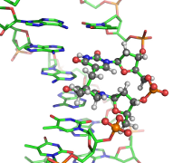
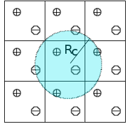
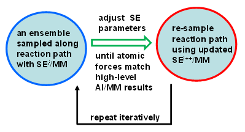

Research
Our interests lie at the interface between theoretical/computational chemistry and biophysics. The current research in the lab is directed towards understanding how biomolecules perform their functions via dynamical motions that are encoded in their three-dimensional structures. Ongoing projects include computer simulations of ABC transporters and development of combined quantum mechanical/molecular mechanical (QM/MM) methods.
ABC Transporters

Many essential functions of living cells are performed by nanoscale motors consisting of protein complexes. The ability of these biomolecular motors to utilize chemical free energy to perform mechanical work makes them splendid molecular machines. Among various types of molecular motors, ATP-binding cassette (ABC) transporters represent a unique family of motor proteins that enable translocations of various substrates across cell membranes, by harnessing the free energy associated with ATP binding and hydrolysis (Davidson et al. 2008). Dysfunctions of ABC transporters have been linked to a number of diseases, including cystic fibrosis, the most common fatal hereditary disease in the US. Overexpression of certain ABC transporters also contributes to multidrug resistance of tumor cells after chemotherapy. Using multiscale computer simulations, our project aims to obtain a deeper understanding of conformational dynamics, enzyme catalysis, and the chemomechanical coupling mechanisms by which chemical free energy is converted into mechanical work in ABC transporters. Currently, we are focusing on elucidating ATP hydrolysis mechanisms in several ABC systems (Zhou, Ojeda-May, and Pu 2013).
DNA Damage
Under nutrient scarcity, certain bacteria form endospores that protect bacterial DNA from environmental damage, including UV radiation. UV light can damage DNA by forming cross-links between adjacent thymine bases (TT) in a DNA strand. Under regular conditions, such damage leads to the formation of a cyclobutane pyrimidine dimer (CPD) as the dominant photoproduct. In spores, however, the DNA photoreaction pattern changes: a special lesion, 5-thyminyl-5-6-dihydrothymine (the spore-photoproduct, SP), becomes the major form of TT damage. It is believed that SP lesions “lock” the DNA in a chemically inert state until germination, when these lesions are repaired by a specialized enzyme called spore-photoproduct lyase (SPL). Collaborating with Prof. Lei Li, we have computationally characterized several dinucleotide analogues of SP (D. Lin et al. 2012; G. Lin et al. 2011), and are currently developing all-atom models for simulating short segments of SP-containing DNA.

QM/MM Method Development
QM/MM-IPS

We are developing new approaches to include long-range electrostatic interactions in combined quantum mechanical and molecular mechanical (QM/MM) calculations. Traditionally, such interactions in molecular simulations are handled by lattice-sum methods such as Ewald summation, which considers all periodic images of particles. The Isotropic Periodic Sum (IPS) method (Wu and Brooks 2005, 2008, 2009; Ojeda-May and Pu 2014a) offers an efficient alternative: pairwise interactions are computed locally within a cutoff distance, while contributions beyond the cutoff are treated via a mean-field approximation assuming isotropic distribution of image particles. So far, IPS has been applied to purely classical systems. We are extending the method to combined QM/MM potentials (Ojeda-May and Pu 2014b), laying the groundwork for its use in enzyme simulations.
RP-FM
A long-standing challenge in computational enzymology is obtaining accurate free energy profiles for chemical reactions in condensed phases. Direct ab initio (AI) QM/MM sampling is computationally infeasible, so semiempirical (SE) methods are used instead — but they require careful reparameterization. We recently proposed Reaction Path Force Matching (RP-FM) (Zhou and Pu 2014), a new SRP-fitting strategy that reparametrizes SE methods directly against AI/MM forces in condensed-phase simulations. RP-FM proceeds iteratively: 1. Sample configurations along a reaction path on an SE/MM potential energy surface. 2. Adjust SE parameters to reproduce AI/MM atomic forces via force matching. Repeating this cycle enables SE/MM simulations to achieve AI/MM-level accuracy without direct AI sampling. We have demonstrated the effectiveness of RP-FM on proton transfer reactions in both gas and solution phases, and extensions to enzymatic reactions are underway.
